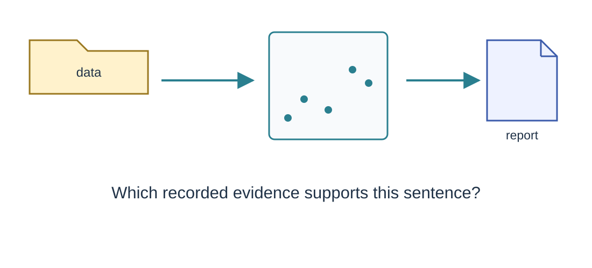
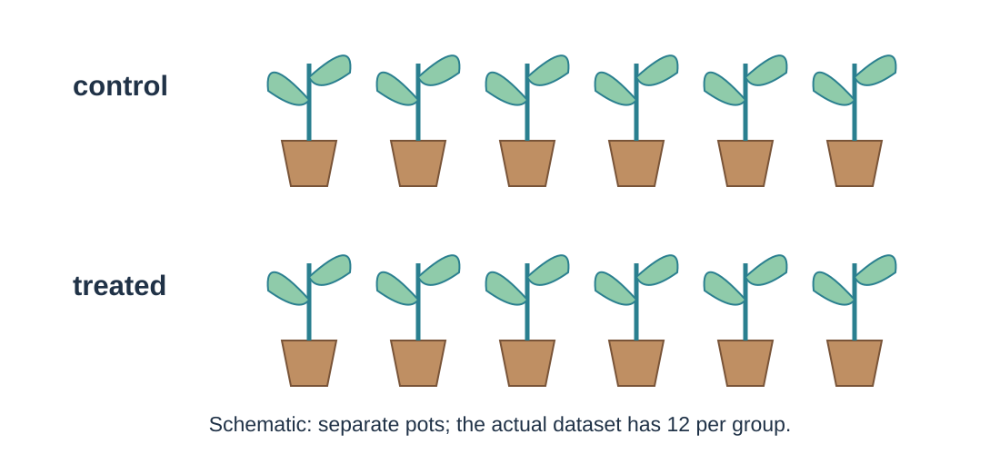
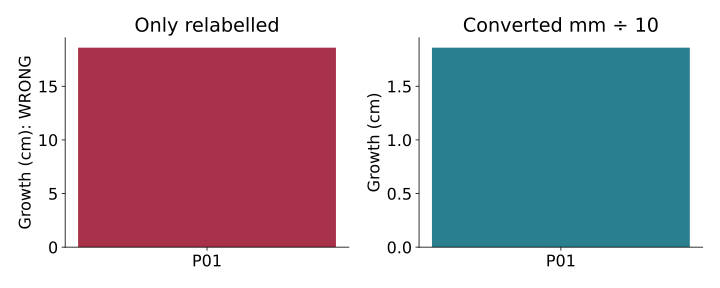
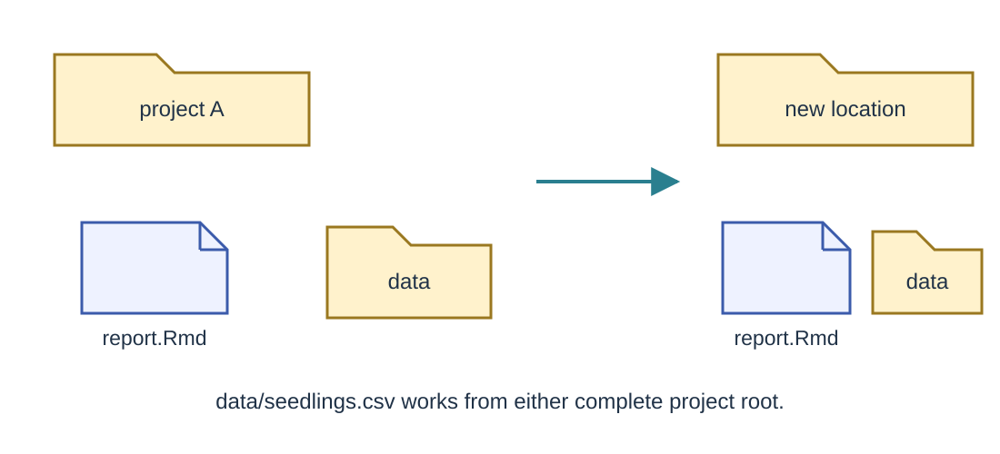
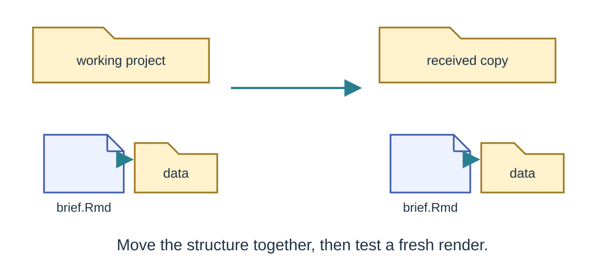
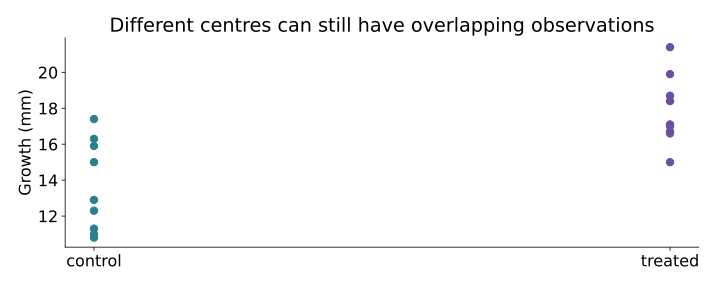

Your first biological report
Day 10 — A short report that answers a question and runs again
About this lecture
A lab report, a thesis chapter or a paper is read by someone who was not in the room and will not run your code first. They need to know what was measured, how, what you saw, and what you cannot conclude. A report that announces “the treatment works!” from two overlapping clouds of points, or that only renders on your own laptop, fails that reader. Today you write a short report that answers a biological question honestly and that someone else can rerun.
Today you will:
- build a report from four short sections: question and data, methods, results, interpretation;
- explain a method in biological words, with the code underneath;
- describe a figure honestly: pattern, overlap and one limitation;
- check that the project renders from a fresh session and from another folder.
This day brings together Days 6–9. Day 11 asks what to do when the table itself contains errors.
Four sections, four jobs
- Question and data: what was asked, what was measured, what one row is.
- Methods: how the file was read and how growth was calculated.
- Results: a labelled figure and a few calculated facts.
- Interpretation: what the pattern is, how much plants vary, one limitation.

Every sentence should be backed by the data, a figure or the study description.
Question and data: what was measured?
- 24 seedlings in separate pots; 12 randomly allocated to a nutrient treatment, 12 controls.
- Length measured at the start and after seven days, in mm.
- One row = one plant. Two lengths of the same plant are not two plants.
- Simulated teaching data: say so.

Methods: biology first, code underneath
“Growth was calculated as final minus initial length for each plant, in mm.”
That tells a reader more than “we used mutate()”. The code still goes in the report, so the calculation can be rerun, followed by three simple checks:
> seedlings <- read_csv("data/seedlings.csv",
+ show_col_types = FALSE)
> seedlings <- mutate(seedlings,
+ growth_mm = final_mm - initial_mm)
> nrow(seedlings)
[1] 24
> sum(is.na(seedlings$growth_mm))
[1] 0
> range(seedlings$growth_mm)
[1] 8.0 30.8- 24 plants: all of them are there.
- 0 missing growth values: every plant was measured twice.
- Growth from 8.0 to 30.8 mm: every plant grew, and no value looks like a typing error.
Results: a figure the reader can read
- One dot = one plant. Say so in the caption.
- y-axis: change in length (mm). Not final size.
- Every plant shown, so the reader sees the spread, not only a summary.
- The figure answers the question; one good figure beats three unexplained ones.

Interpretation: say what you see, and no more
| Sentence | OK? |
|---|---|
| “Growth varied among plants in both groups.” | Yes: visible in the figure |
| “Treated plants tended to grow more, but the groups overlap: control 8.0–18.7 mm, treated 12.2–30.8 mm.” | Yes: describes these data |
| “Every treated plant grew more than every control.” | No: P17 (treated) grew 12.2 mm, less than many controls |
| “The treatment works.” | Not yet: we have not measured how uncertain the difference is (week 4) |
End with one limitation, e.g. a small simulated study, or no uncertainty assessed yet.
A unit slip runs without warning
- Relabelling the axis “cm” without dividing by 10 makes P01’s 18.6 mm into “18.6 cm”.
- R gives no error: it does not know units.
- Check together: the values, the column name (
_mm), the axis label and the text.

Make the project portable
- Paths start from the project folder:
data/seedlings.csv, not a personal path such asC:/Users/anna/Desktop. - The
.Rmdstays in the project folder; the HTML can go toreports/. - Then the whole folder can move to another place or person and still work.

Test it like a stranger would
Restart R, then in the Console:
> rmarkdown::render("first-report.Rmd",
+ output_dir = "reports")
processing file: first-report.Rmd
...
Output created: reports/first-report.html
> list.files("reports")
[1] "first-report.html"Output created, and the file is in reports/: the report runs from the saved files alone. If it fails, fix the .Rmd, not the Console.

Then copy the whole project folder somewhere else, open that .Rproj, and render again. If it works there, it will work for someone else.
Read the HTML as the reader
Open the HTML in a browser, without the source. Can you find:
- the question, and what one plant (one row, one dot) is?
- the input file and the units?
- how growth was calculated, and what the y-axis shows?
- the main pattern, the overlap, and one limitation?
Anything missing: add it to the .Rmd and render again. Never edit the HTML.
Then: a second, smaller brief
Pick one table and write laboratory-brief.Rmd with the same four sections:
- 18-plant transfer study: T01 grew 15.0 mm; 9 plants per group.
- Or
solutions.csv: calculated concentrations of 50, 100 and 150 mmol/L for each solute.

Same skills, new data: check every number and every sentence against this table, not the old one.
Summary
| Section | What it must contain |
|---|---|
| Question and data | Question; 24 plants, 12 per group, random allocation; one row = one plant; units; simulated |
| Methods | Growth = final − initial length (mm), in words, plus the code with relative paths |
| Results | A labelled figure with every plant; a few checked facts (24 plants, none missing) |
| Interpretation | Pattern, overlap and variation, one limitation; no “the treatment works” yet |
| Reproducible | Renders after restarting R, and from a copy of the project in another folder |
Next (Day 11, data quality): what to do when the table itself has typos, wrong units, duplicates and missing values.
Now: open the Day 10 exercises. Leave with first-report.Rmd and its HTML in reports/, rendered after restarting R.